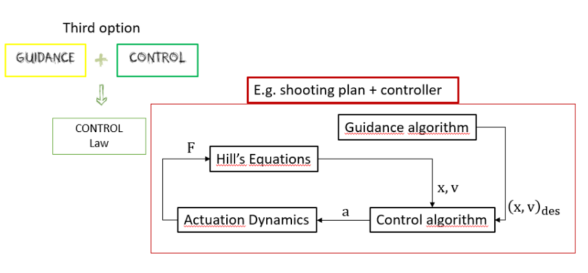
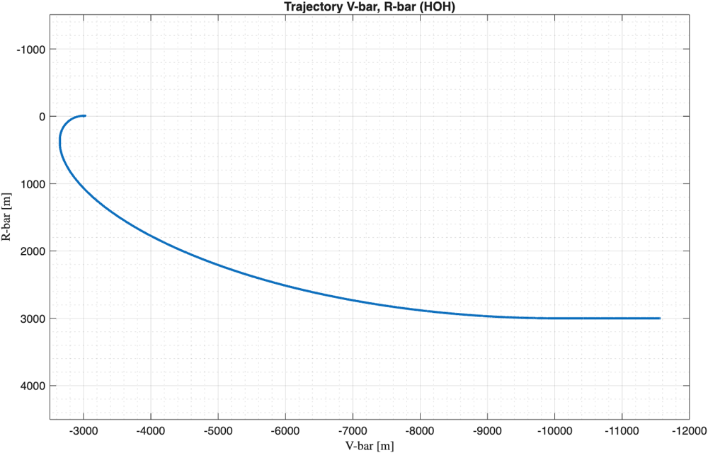
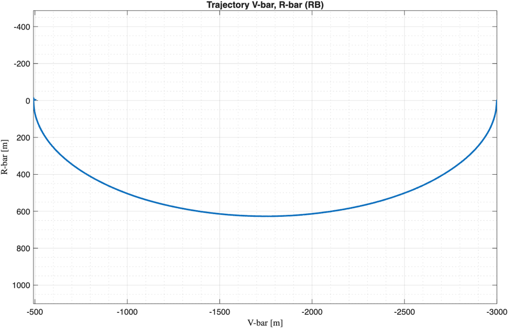
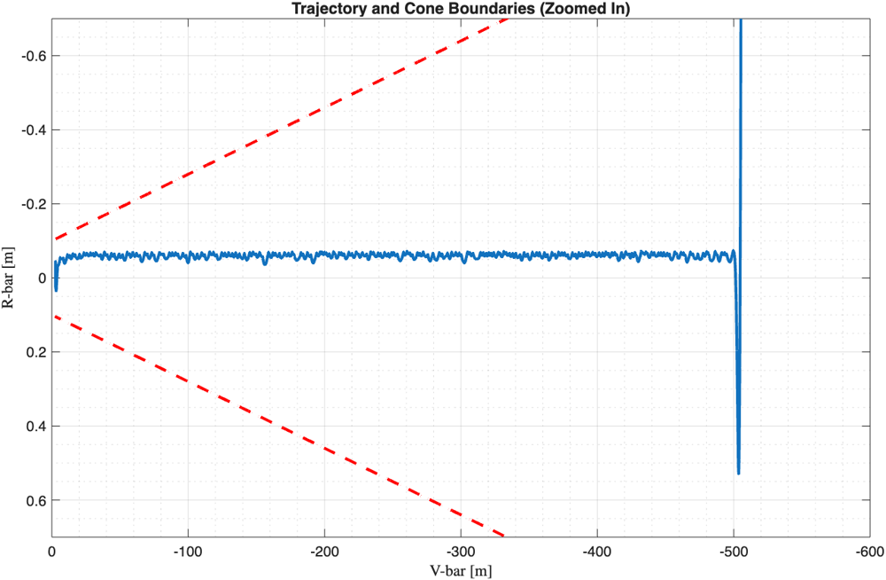
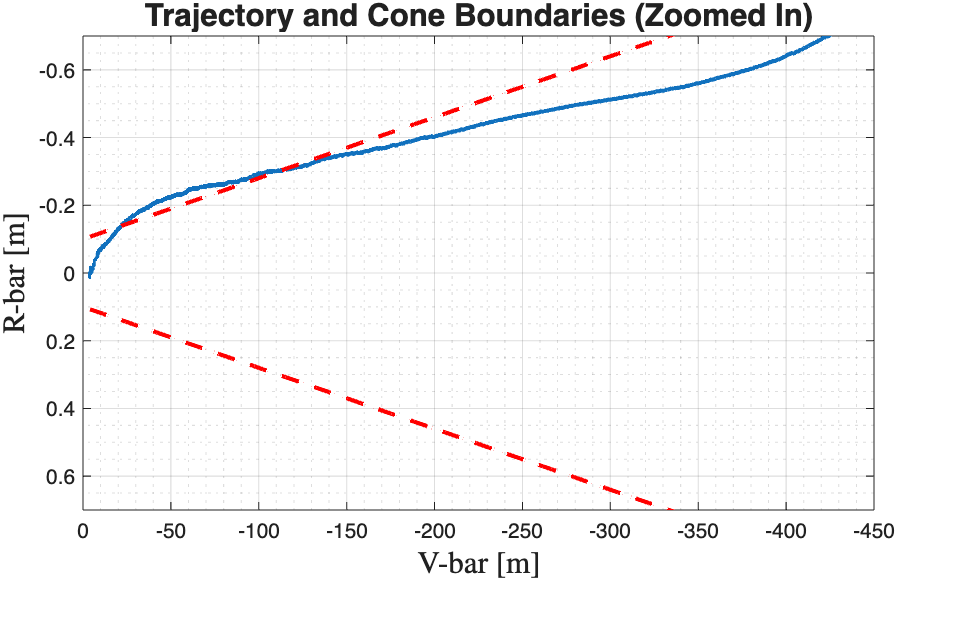
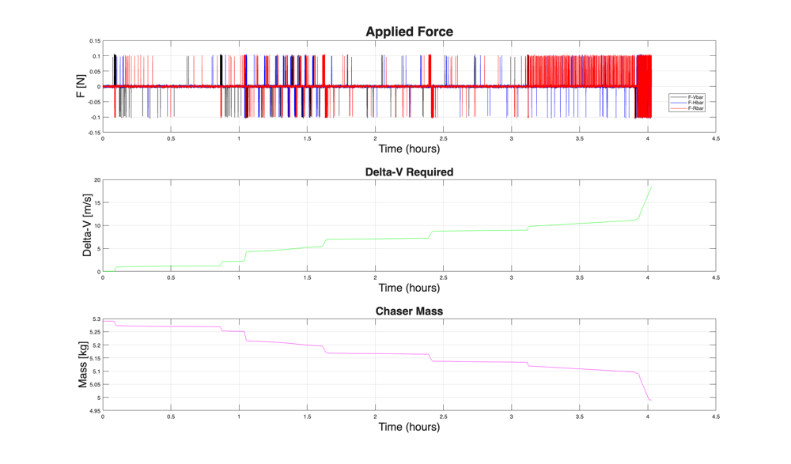

Docking a CubeSat with a target in LEO
The chaser starts about 10 km from the target and has to dock in three phases, each with tighter accuracy than the last.
- Hohmann transfer (far rendezvous): from 3 km below and about 10 km behind the target to the target's orbit, 3 km behind it. Burn times come from an offline shooting plan.
- Radial boost (close-range rendezvous): along V-bar, from 3 km to 500 m.
- Cone approach (final approach): from 500 m to under 4 m, staying inside a cone that narrows from ±1 m at 500 m to ±0.1 m at 4 m.

A 6-DoF simulator built around a real CubeSat
Relative orbital motion and attitude are simulated together, under the main LEO disturbances, for a CubeSat in development at PoliTo.
Simulator
The simulator models the chaser's relative translational motion with Hill's (Clohessy–Wiltshire) equations in the target's LVLH frame, and its attitude with Euler's equations and quaternions. The plant includes the main LEO disturbances: gravity gradient, atmospheric drag, solar radiation pressure and J2.
It runs on a fixed-step Runge–Kutta (ODE4) solver at 100 Hz, with guidance updated at 1 Hz and control at 50 Hz, connected through rate-transition blocks. Navigation is not modelled, so the controllers use the true state.
Spacecraft: ELECTRA
The chaser is ELECTRA, a 3U CubeSat in Phase A at the Politecnico di Torino CubeSat team, designed to measure the ionosphere's Total Electron Content with a GNSS receiver. For this project its mission was re-imagined as a docking between two spacecraft.
- Attitude actuators: four NanoAvionics 4RW0 reaction wheels in a pyramid configuration, which adds redundancy if one wheel fails.
- Propulsion redesign: the baseline electric system (4 thrusters, 2·10⁻⁴ N) was too weak for impulsive manoeuvres, so I replaced it with 12 thrusters of 0.05 N each (Isp 31 s). With 0.3 kg of propellant this gives a ΔV budget of about 34.5 m/s.
- Mass properties: 5.29 kg, with inertias taken from the CAD model and component datasheets.
Guidance and control laws
Sliding-mode control handles the far phases. For the final approach I compared two position controllers and two attitude controllers.
- Position, Hohmann & radial boost: first-order sliding-mode control (SMC) with a boundary layer to limit chattering.
- Position, cone approach: two strategies compared: an artificial potential field (APF) combined with LQR, and a pure SMC law.
- Attitude: an LQR on the quaternion error, angular rates, position and velocity, with Q and R weighted by maximum allowed values, used in all phases. In the cone approach, a PD controller was also tested for comparison.
APF + LQR keeps the approach inside the cone
The full manoeuvre used under 20 m/s of the 34.5 m/s ΔV budget, and only APF + LQR respected the approach cone all the way in.


In the cone approach, APF + LQR kept the chaser inside the approach cone the whole way, with lateral deviations of about ±5 cm and low propellant use. The pure SMC law was more aggressive: it left the cone at just over 100 m from the target, which in real operations would abort the approach, and it fired the thrusters far more often.


On the attitude side, the reaction wheels came close to saturation only briefly and never reached it. The PD controller converged to similar steady-state values as the LQR, but with a sharper initial transient. The whole manoeuvre cost under 20 m/s of ΔV out of the 34.5 m/s available, with most of it spent on the precise station-keeping at the end of the cone approach.

Part of a course
The simulator was the final project of Spacecraft Dynamics & Control at Politecnico di Torino.
The same report covers three preparatory exercises, whose components were reused in the simulator: a state-feedback attitude controller with PWPF thruster modulation, LQR attitude control with reaction wheels, and SMC trajectory tracking for a Hohmann transfer.